Get to the Point
Disneyland ResortGeauga LakeCedar PointHersheypark
After 5.5 hours of driving, We made it to Hersheypark. This is dinner before going to the park.
 Yay! Storm Runner, Here I come!
Yay! Storm Runner, Here I come!
 Here is Hersheys Wonderful Star Attraction! Storm Runner!
Here is Hersheys Wonderful Star Attraction! Storm Runner!
 Storm Runner launches with more fury than 10,000 SCREAMINGLY stingrays.
Storm Runner launches with more fury than 10,000 SCREAMINGLY stingrays.
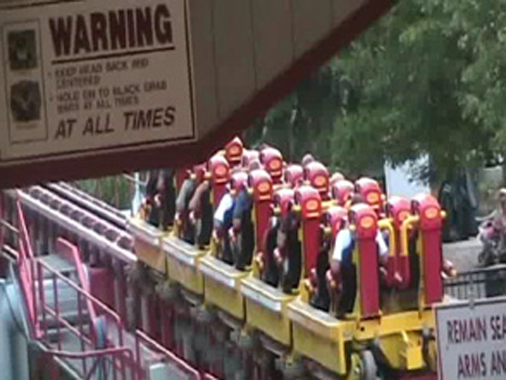
Now get ready. Here we go.
 Up! Up! And Reach for the Sky. Just don't kick it.
Up! Up! And Reach for the Sky. Just don't kick it.
 Storm Runner drops down at a SCREAMING angle of 90 degrees. But Maverick is better.
Storm Runner drops down at a SCREAMING angle of 90 degrees. But Maverick is better.
 This is the Flying Snake Dive! It has airtime. All you need is a snake, A slingshot, and a diving board. Hey Cody, Next time you go to the pool, Ask Isaac if you can borrow his pet snake.
This is the Flying Snake Dive! It has airtime. All you need is a snake, A slingshot, and a diving board. Hey Cody, Next time you go to the pool, Ask Isaac if you can borrow his pet snake.
 Storm Runner through the trees!
Storm Runner through the trees!
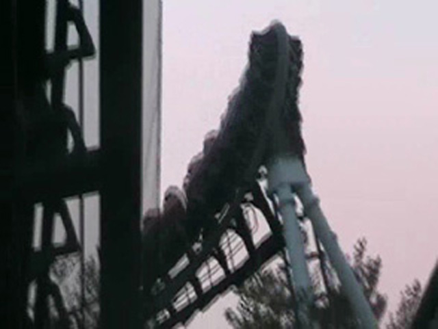
Time for another Vokoma Death Machine.
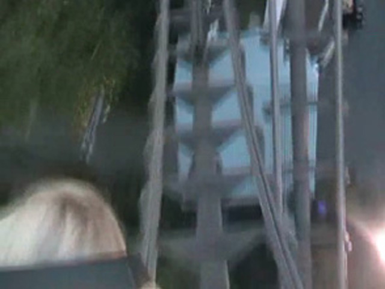
Good Thing I wore a helmit on this one.
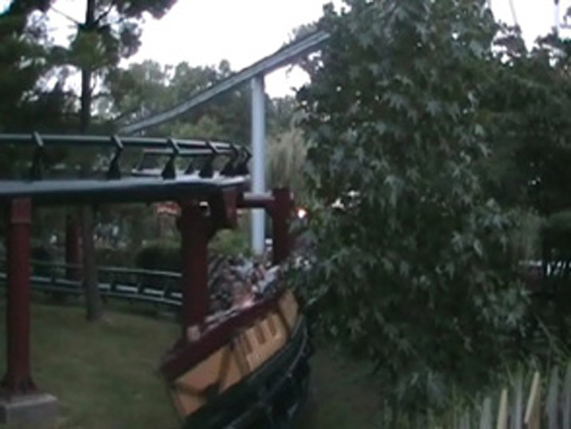
While this may look like a common stupid helix of fake death, Its not. Its so crappy It doesn't deserve to be a fake helix of death.
Welcome to the Abyss of Mine Trains.
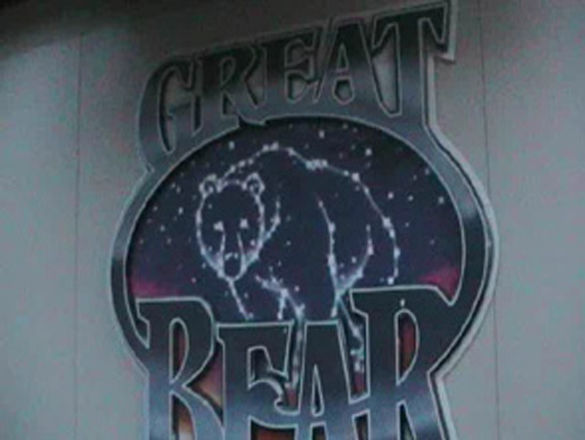
Welcome to the Great Bear. AKA, The Random Coaster.
 What is the point of this ride?
What is the point of this ride?
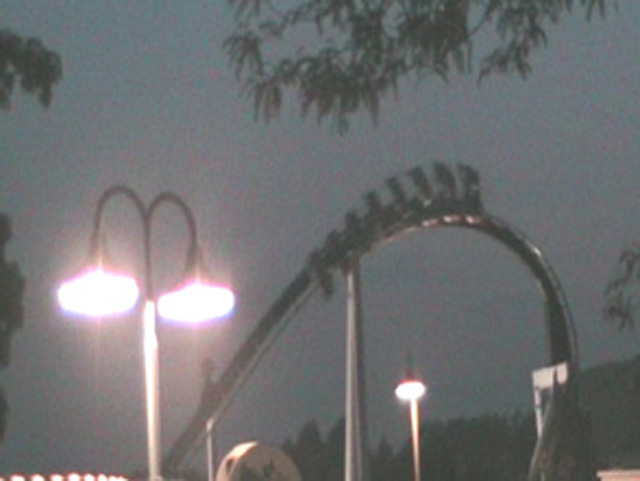
Here is one of the Good Random Things on this ride.
According to some losers, This picture can cause a seizure.
 This so called Painful Coaster "really hurts." Millions will be pleased. One will be dissapointed.
This so called Painful Coaster "really hurts." Millions will be pleased. One will be dissapointed.
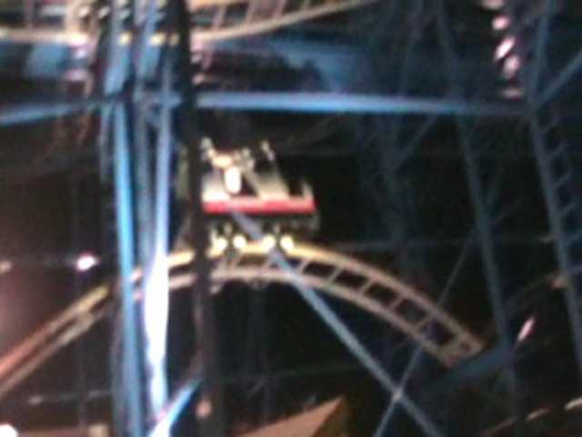
Heres what makes Mullholland Madness suck.
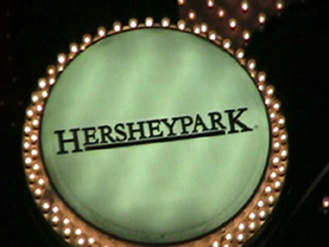
Because you most likely forgot what park you were looking at from Painful Boomerangs, Sh**ty Mine Trains, and Random B&M Inverts, I posted a pic to remind you all where I was.
 Time for some Good Old Night time Ass Kicking!
Time for some Good Old Night time Ass Kicking!
 Here you can see Lightning Racers Layout.
Here you can see Lightning Racers Layout.
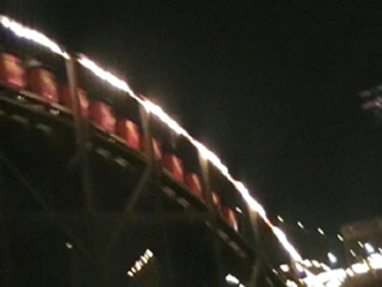
And Lightning Takes the Gold!
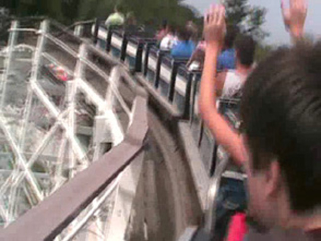
Hey Cedar Fair. Whats wrong with this picture?
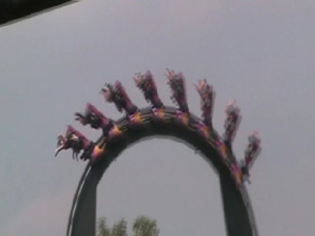
Great Bear is still fun! Even though it is random.
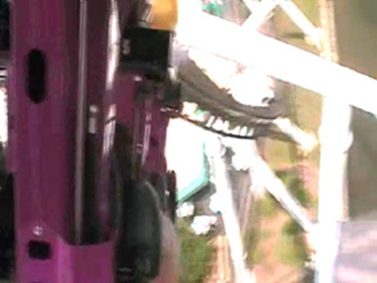
Hey, At least its not forceless.
 AM PM. Too much Storm Runner.
AM PM. Too much Storm Runner.
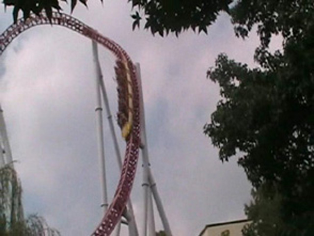
Its the Funky Imhellan Loop.
Katelyn, PETA is coming to kill you to prevent the death of any more horses.
 I'm not sure how bad the ride was with the old trains, but its fine with this train.
I'm not sure how bad the ride was with the old trains, but its fine with this train.
 Wildcat dives down into its first drop.
Wildcat dives down into its first drop.
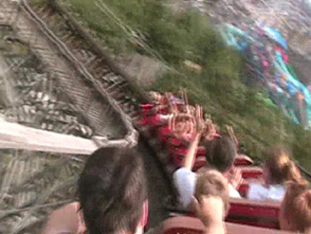
Someones going to have to soak themselves on Tidal Waves Bridge Twice for this Dissapointment.
 Theres the Magic Extra Hump Mullholland Madness needs.
Theres the Magic Extra Hump Mullholland Madness needs.
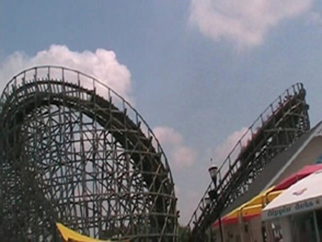
Some last asses must be kicked before heading back for California.
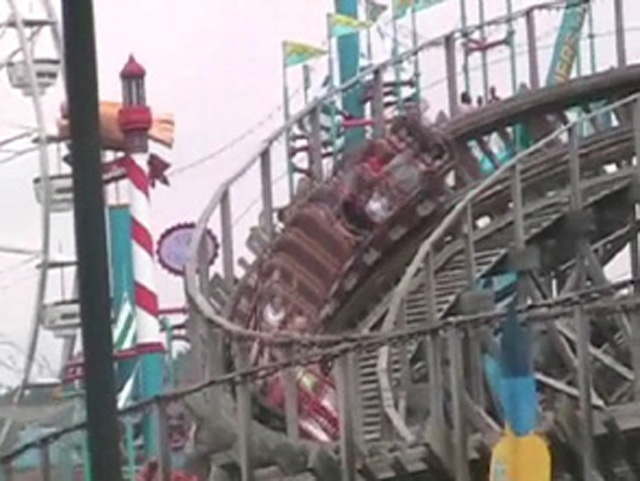
Its Lightning Racers SCREAMINGLY awsome turn.
 I"M WINNING!!!! YES!! I HAVE WON LIGHTNING RACER!!!!
I"M WINNING!!!! YES!! I HAVE WON LIGHTNING RACER!!!!
"Duh Duh Duh Duh! Duh Duh Duh Duh!!!!!"
I feel like such a chocolate bar! I probably belong on Aqua Teen Hunger Force!
TWIN FALLS REFERENCE!!!!
And how else do you end a perfect week.
Home